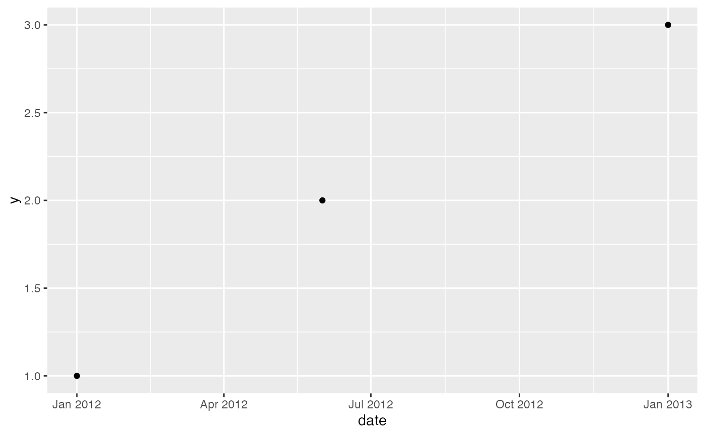
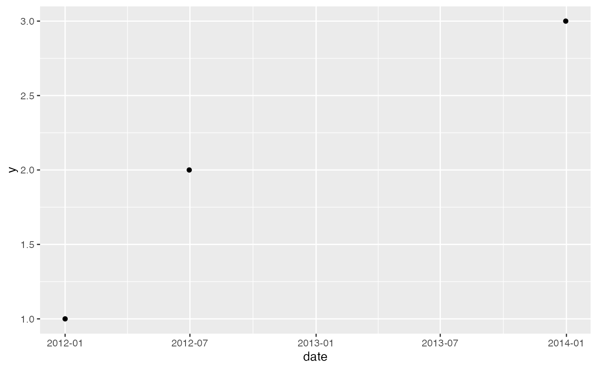

These scales place a 'messy' date, of the mdate class that
{messydates} defines, on the x or y axis of a {ggplot2} plot.
The dates are then spaced by how far apart they are,
and the axis is marked with date breaks.
Without them, {ggplot2} reads an mdate column as a character vector
and draws a discrete axis, which orders the dates as text
and spaces them evenly.
Arguments
- ...
Arguments passed on to
ggplot2::scale_x_date()orggplot2::scale_y_date(), such asname,breaks,date_breaks,date_labels, orlimits.- FUN
The function that resolves each messy date to the one date at which it is drawn.
messydates::vminby default, as formessydates::as.Date(), which also takesvmax,vmean,vmedian,vmodal, orvrandom.
Details
{ggplot2} chooses a scale from the class of the column,
so a plot that maps an mdate column to x or y
picks these scales up without naming them.
Add the scale to the plot to pass FUN, date_breaks, or date_labels.
A position on an axis is a single point,
but a messy date may be a range, a set, or an unspecified component,
and so covers a span of dates.
These scales therefore resolve each date to one date with FUN,
as messydates::as.Date() does.
To draw the span itself, resolve both of its ends in the mapping,
as in aes(x = vmin(date), xend = vmax(date)) with geom_segment();
both ends are mdate vectors, so they share this scale.
Examples
library(ggplot2)
dates <- messydates::as_messydate(c("2012-01-01", "2012-06", "2013~"))
df <- data.frame(date = dates, y = 1:3)
ggplot(df, aes(x = date, y = y)) + geom_point()

ggplot(df, aes(x = date, y = y)) + geom_point() +
scale_x_mdate(FUN = messydates::vmax, date_labels = "%Y-%m")
